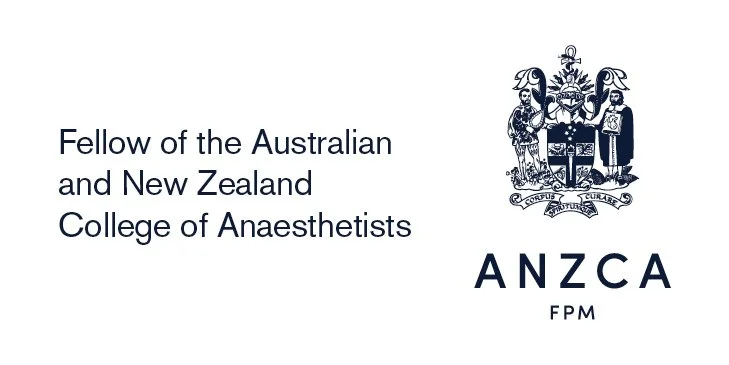

Dr Ed Halvey is a Specialist Anaesthetist (Fellow of the Australian and New Zealand College of Anaesthetists) based in Perth. He provides anaesthesia for adults undergoing surgery at public and private hospitals across the city, with a focus on safe, comfortable care, careful pain management, and clear communication at every step.
Dr Halvey trained in the United Kingdom, gaining Fellowship of the Royal College of Anaesthetists and completing specialty training before moving to Western Australia. His consultant experience spans elective and emergency anaesthesia, regional (nerve block) anaesthesia, perioperative medicine, obstetric and orthopaedic lists, and acute pain care.
Qualifications
- FANZCA - Fellow of the Australian and New Zealand College of Anaesthetists (2024)
- FRCA - Fellow of the Royal College of Anaesthetists, UK (2018); UK specialty training completed (CCT, 2022)
- MBBS - University College London (2010)
- BSc Neuroscience (First Class Honours) - University College London (2007)

Special interests
Across his training and consultant work, Dr Halvey has developed particular interests in:
- Regional anaesthesia - nerve blocks and neuraxial techniques to control pain and reduce reliance on opioids.
- Perioperative medicine - preparing complex and frail patients for surgery and shared decision-making.
- Pain medicine & opioid stewardship - multimodal pain relief and planning safe reduction of opioids after surgery.
- Obstetric and orthopaedic anaesthesia - with regular sessions in both.
He has published on perioperative pain and the use of anti-inflammatory medicines around surgery, and has led quality-improvement work on post-operative analgesia and opioid stewardship - the same thinking behind the recovery pain relief plans patients receive.
Approach
Dr Halvey believes patients do best when they understand their plan. Before your procedure you will know what to expect, and afterwards you will have clear written guidance to follow at home.